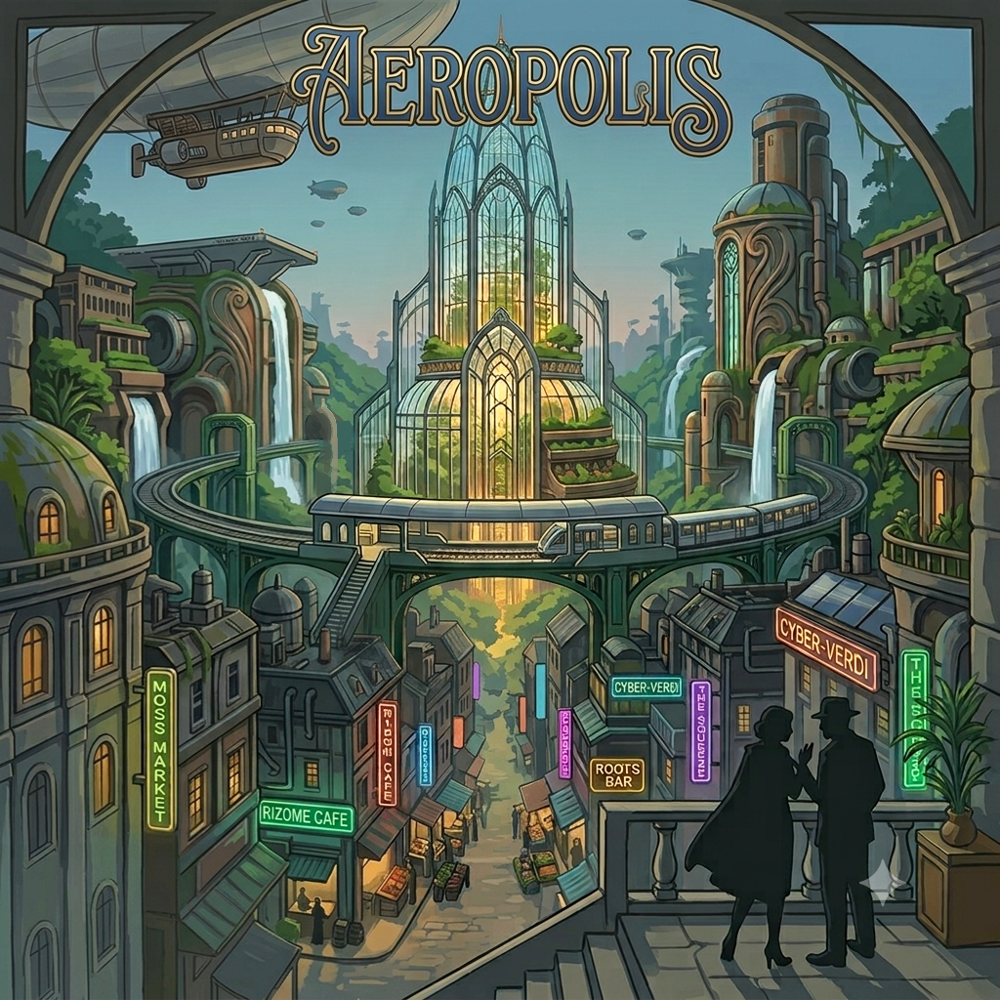

From the decadent high council to the ruthless underworld, no one in Aeropolis is clean. Here, power sprouts from greed and blackmail, driving the city toward revolution. Play both sides from the shadows, engineer a silent coup to eliminate your rivals and seize absolute control.

This illustration is AI generated and is not final art. It is only intended to convey the mood and setting of the game.
Each player begins with two distinct characters (2 cards): a Citizen and an Outcast. These characters form the left ends of their tableau, with cards played into either character's line. There are 5 Citizens and 5 Outcasts, creating 25 possible starting combinations.
A central vertical track runs along the spire of the city board. Each player places their Citizen token at the top and their Outcast token at the bottom of this track. The Citizen can lose status by moving down, while the Outcast can move up. The revolution starts when a player's Citizen and Outcast meet.
Players can spend status by moving a character down the track to generate resources or activate effects. A character can later move back up. Moving down may reduce the final meeting score or access to certain actions.
Tight construction: starting decks are small and cycle rapidly (aiming for 7–8 reshuffles per game).